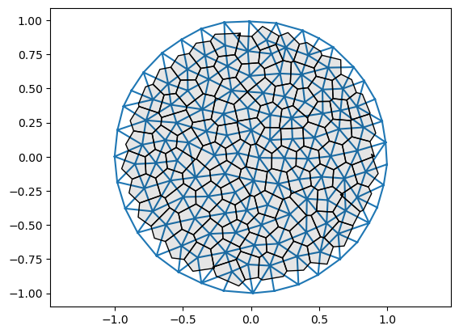

# test reading a mesh
mesh = TriMesh.read_obj("test_meshes/disk.obj")Warning: readOBJ() ignored non-comment line 3:
o flat_tri_ecmcFirst, we need to create a suitable data structure to describe cell arrays. We will represent cell tilings by 2D Voronoi tessellations and variants thereof (like power diagrams). Cells are denoted by Latin indices \(i,j,k, \dots\). Voronoi tessellations are dual to Delaunay triangulations (each Voronoi vertex is a Delaunay triangle). This means that we can represent the cell network as a 2D triangulation with vertices \(V\) and faces \(F\). Each face is an (ordered) triple of vertices \((i,j,k)\). Vertex positions are denoted \(\mathbf{v}_i\).
We will first consider the case where the number of vertices does not change. Cells can, however, rearrange (T1-transitions/edge flips in the triangulation). Such flips also conserve the number of faces and edges. In addition to the vertices and faces, we will need to store various attributes for vertices, faces, and edges (for example, the edge lengths, or the Voronoi position of a face).
Throughout, we will (attempt to) provide a type signature for all functions. To do so for array-based functions, we use jaxtyping.
The aim is to create a triangulation datastructure compatible with the JAX library for automatic differentiation and numerical computing. In practice, this means that we use jnp (=jax.numpy) instead of numpy, and make sure our code follows JAX’s functional programming paradigm (see JAX- the sharp bits). There is also some extra legwork to register any new classes with JAX.
The simplest way to represent a cell tiling is by its dual triangular mesh (one triangulation vertex per cell). Triangles will be denoted as faces. We thus represent a cell tiling by:
float.int. Each row is a triple of vertex indices that form a face.float. An entry is the position of the tesselation vertex dual to the triangulation face.To read and write, we use the .obj-file format. We will also make heavy use of the igl geometry processing library. We start by defining a minimal TriMesh class for our cell-tiling objects. This class is mainly a “holder” class for loading, saving, visualizing, etc meshes, and not to be used for numerical computation. We come to that below.
Further below, we will also add optional attributes for faces, vertices, and edges. Each attribute is a dictionary with keys (from an Enum of possibilities) and values, which are numpy vectors whose \(n\)th entry corresponds to vertex/face/edge \(n\). For this reason, vertices/faces/edges are ordered.
def TriMesh(
vertices:Float[Array, 'n_vertices dim'], faces:Int[Array, 'n_faces 3'], face_positions:Union=None
)->None:
Simple class for reading, holding, transforming, and saving triangular meshes.
A TriMesh comprises vertices and faces, describing a surface in 2d or 3d. In addition, there can be a 2d/3d position for every face (think Voronoi dual of the triangulation).
Vertices and faces are jnp.arrays. Each face is a triple of vertex indices. Vertices and faces are ordered - this is essential so that we know which attribute vector entry goes to which vector/edge/face. Faces in a face are assumed to be in counter-clockwise order.
Meshes are read and written in the .obj format (https://en.wikipedia.org/wiki/Wavefront_.obj_file). To store face_positions, we abuse the vn (vertex normal) entry of an .obj file. Face positions will be written in order corresponding to faces. When reading from an .obj file, edges are recomputed from faces and initialized in alpha-numerical ordering. An .obj file expects 3d positions; the z-position is ignored when reading and set to 0 when writing for 2d meshes.
Attributes
dim : int = 2
vertices : Float[jax.Array, “n_vertices dim”]
faces : Int[jax.Array, “n_faces 3”]
face_positions : Float[jax.Array, “n_faces dim”]
Property methods (use like attributes)
n_vertices : int
has_inf_vertex : bool
Static methods
read_obj : str -> TriMesh
Methods
write_obj : str -> None
# test reading a mesh
mesh = TriMesh.read_obj("test_meshes/disk.obj")Warning: readOBJ() ignored non-comment line 3:
o flat_tri_ecmc# test computing the circumcenter of each face. should be equidistant to all vertex points
dists = jnp.stack([jnp.linalg.norm(mesh.vertices[mesh.faces[:,i]]-mesh.face_positions, axis=1) for i in [0,1,2]], axis=1)
jnp.allclose(dists[:,0], dists[:,1]) and jnp.allclose(dists[:,1], dists[:,2])Array(True, dtype=bool)# test writing face positions to vn entries
mesh = TriMesh.read_obj("test_meshes/disk.obj")
filename = "test_meshes/disk_write_test.obj"
mesh.write_obj(filename, save_face_positions=True)
mesh = TriMesh.read_obj(filename, read_face_positions=True)Warning: readOBJ() ignored non-comment line 3:
o flat_tri_ecmcSome functions to create meshes based on the Delaunay triangulation of a point set.
Some functions for plotting meshes:
def generate_triangular_lattice(
nx:int, ny:int
)->Float[Array, 'nx*ny 2']:
Get points for rectangular patch of triangular lattice with nx, ny points.
def generate_poisson_points(
n_vertices:int, limit_x:float=1, limit_y:float=1
)->Float[Array, 'n_vertices 2']:
Sample n_vertices points from the Poisson ensemble in rectangle [-limit_x/2, limit_x/2] * [-limit_y/2, limit_y/2].
def generate_ginibre_points(
n_vertices:int
)->Float[Array, 'n_vertices 2']:
Sample n_vertices points from the Ginibre ensemble. Points are scaled to unit disk.
#points = generate_triangular_lattice(10, 10)
points = generate_ginibre_points(100)
mesh = TriMesh(vertices=points, faces=jnp.array(spatial.Delaunay(points).simplices))
plt.triplot(*points.T, mesh.faces)
plt.scatter(*points.T)
plt.axis("equal")(np.float64(-1.6315276371405518),
np.float64(1.6191872290800107),
np.float64(-1.4880190145409438),
np.float64(1.7089872695623352))
def get_adjacent_vertex_indices(
faces:Int[Array, 'n_faces 3'], n_vertices:int
)->list:
For each vertex, get the indices of the adjacent vertices in correct order. For boundary vertices, this list contains the vertex itself.
mesh = TriMesh.read_obj("test_meshes/disk.obj")
neighbors = get_adjacent_vertex_indices(mesh.faces, n_vertices=mesh.vertices.shape[0])Warning: readOBJ() ignored non-comment line 3:
o flat_tri_ecmcFor simulation and geometry processing, we need a different representation of the adjacency information than the list of triangle (for example, to compute the area of a cell). Typically, this is achieved by a half-edge mesh (HE) data structure. We represent the HE data structure by 3 sets of integer index arrays:
origin, dest, nxt, prv, twin, face] for each half-edge. face can be np.nan for boundary vertices.Additionally, there are two float arrays for vertex and face positions, as previously. However, we split combinatorial and geometric information - a HeMesh class for the combinatorics, and a couple of regular arrays for the vertex positions, face positions, and vertex/half-edge/face attributes. The latter are packaged into a GeomMesh class. Together, the pair (GeomMesh, HeMesh) describes a mesh (like vertices/faces pair). A named tuple Mesh comines the two.
The first task is to create a helper function to plot mesh connectivity, and to create the half-edge connectivity matrices from the more conventional list-of-triangles format. The latter is somewhat involved.
def label_plot(
vertices:Float[Array, 'n_vertices 2'], faces:Int[Array, 'n_faces 3'], hemesh:Union=None, vertex_labels:bool=True,
face_labels:bool=True, ax:Union=None, fontsize:Union=None
)->None:
For debugging purposes. Plot triangular mesh with face/vertex labels in black/blue. If hemesh is not None, the connectivity info from it is used to plot the half-edge labels.
mesh = TriMesh.read_obj("test_meshes/disk.obj")
plt.triplot(*mesh.vertices.T, mesh.faces)
label_plot(mesh.vertices, mesh.faces, fontsize=10)
plt.axis("equal")Warning: readOBJ() ignored non-comment line 3:
o flat_tri_ecmc(np.float64(-1.10003475),
np.float64(1.09628575),
np.float64(-1.09934025),
np.float64(1.09050125))
def get_half_edge_arrays(
n_vertices:int, faces:Int[Array, 'n_faces 3']
)->list:
Get half-edge data structure arrays from faces.
Returns: incident, orig, dest, twin, nxt, prv, heface, face_incident
We want to be compatible with JAX. For this reason, we
jnp = jax.numpy instead of npx = x.at[idx].set(y) syntaxHeMesh and GeomHeMesh data structuresLateron, for simulations, we use the equinox library, which adds a few useful tools to JAX. (A neural-network library like flax is probably overkill).
JAX supports not only arrays as inputs/outputs/intermediate variables, but also pytrees. Pytrees are nested structures (dicts, lists-of-lists, etc) whose leaves are “elementary” objects like arrays. Fortunately, our HeMesh class is already a lot like a pytree - it is a collection of arrays. For JAX to understand this, we need to register our HeMesh class as a custom pytree node. We register our dataclasses using jax.tree_util.register_dataclass.
Sidenote: Neural networks, in libraries like Flax or Equinox, are basically very similar. They are dataclass-like classes which hold all the arrays associated with a NN (the different weights, and maybe some parameters) with class methods like __call__ specifying the forward pass through the NN. Equinox automatically registers your NN as a pytree by inheriting from the equinox.Module class.
For just-in-time compilation, JAX distinguishes two types of variables: dynamic and static. Control flow cannot depend on the value of dynamic variables, only on their shape.
Upshots: 1. replace if with jax.lax.cond / jnp.where (full autodiff compatible), and while with jax.lax.while_loop (forward autodiff only). 2. mark variables which are not going to change during simulation as static.
def HeMesh(
incident:Int[Array, '*batch n_vertices'], orig:Int[Array, '*batch n_hes'], dest:Int[Array, '*batch n_hes'],
twin:Int[Array, '*batch n_hes'], nxt:Int[Array, '*batch n_hes'], prv:Int[Array, '*batch n_hes'],
heface:Int[Array, '*batch n_hes'], face_incident:Int[Array, '*batch n_faces'], inf_vertices:Union=()
)->None:
Half-edge mesh data structure for triangular meshes.
A half-edge mesh is described by a set of half-edges and several arrays that specify their connectivity (see markup explanation above). This class serves as a container for multiple arrays. For future compatibility with JAX, after initialization, do not modify these arrays in-place; always return a new HeMesh object. The mesh vertices may live in whatever dimension - this does not affect the connectivity bookkeeping.
Half-edge meshes are initialized from a list of triangles and a number of vertices, and can return the original triangles (e.g., to save as a .obj).
All information and methods are purely “combinatorial”. The HeMesh class does not contain the vertex or face positions. These are saved in the GeomHeMesh class that combines a HeMesh (combinatorics) with a couple of other arrays (geometry).
—Conventions—
For vertices, the incident half-edge points away from the vertex.
To describe the mesh boundary, there are two options: 1. Initialize from a triangulation with a boundary. Half-edges without a face (boundary) are assigned heface=-1. 2. Initialize from a triangulation without boundary, where certain vertices are “at infinity”. They should have coordinates [np.inf, np.inf]. Each infinity vertex corresponds to one boundary. For a single boundary, the vertex at infinity is, by convention, the final one.
Starting from a set of triangles, the half-edges are initialized as follows: The 1st N_edges half-edges are (origin_vertex, destination_vertex), in lexicographic order, with origin_vertex < destination_vertex. The 2nd N_edges are their twins, in the same order.
Attributes
incident : Int[jax.Array, “n_vertices”]
orig : Int[jax.Array, “n_hes”]
dest : Int[jax.Array, “n_hes”]
nxt : Int[jax.Array, “n_hes”]
prv : Int[jax.Array, “n_hes”]
twin : Int[jax.Array, “n_hes”]
heface : Int[jax.Array, “n_hes”]
face_incident : Int[jax.Array, “n_faces”]
inf_vertices : tuple[Int]
Property methods (use like attributes)
n_vertices : int
n_hes : int
n_faces : int
n_items : tuple[int, int, int]
faces : Int[jax.Array, “n_faces 3”]
has_inf_vertex : bool
is_inf_face : Bool[jax.Array, “n_faces”]
is_unique : Bool[jax.Array, “n_hes”]
is_inf_he : Bool[jax.Array, “n_hes”]
is_bdry_he : Bool[jax.Array, “n_hes”]
is_bdry_edge : Bool[jax.Array, “n_hes”]
is_bdry : Bool[jax.Array, “n_vertices”]
Static methods
from_triangles : tuple[int, Int[jax.Array, “n_faces 3”], Int[jax.Array, “n_boundaries”] -> HeMesh
Class methods
iterate_around_vertex : int -> Int[jax.Array, “n_neighbors”]
save : str -> None:
Static methods
load : str -> HeMesh
mesh = TriMesh.read_obj("test_meshes/disk.obj")
hemesh = HeMesh.from_triangles(mesh.vertices.shape[0], mesh.faces)Warning: readOBJ() ignored non-comment line 3:
o flat_tri_ecmc# hemeshes can be compared for equali and are registered as py-trees
leafs, ts = jax.tree_util.tree_flatten(hemesh)
hemesh, hemesh == hemesh(HeMesh(N_V=131, N_HE=708, N_F=224), True)# test iteration around vertex
hemesh.dest[hemesh.iterate_around_vertex(69)], hemesh.orig[hemesh.iterate_around_vertex(56)](Array([80, 68, 56, 46], dtype=int64),
Array([56, 56, 56, 56, 56, 56, 56], dtype=int64))# boundary in cc-wise order
(hemesh.orig[187], hemesh.dest[187]), hemesh.heface[187], hemesh.is_bdry_he[187],((Array(58, dtype=int64), Array(70, dtype=int64)),
Array(-1, dtype=int64),
Array(True, dtype=bool))hemesh.is_bdry_he[187], hemesh.is_bdry_he[541], hemesh.heface[541](Array(True, dtype=bool), Array(False, dtype=bool), Array(145, dtype=int64))# to model mesh boundaries, we can add an "infinity" vertex. Not done here, see below
hemesh.has_inf_vertex, hemesh.inf_vertices(False, ())fig = plt.figure(figsize=(14,14))
plt.triplot(*mesh.vertices.T, hemesh.faces)
label_plot(mesh.vertices, hemesh.faces, fontsize=10, hemesh=hemesh, face_labels=False)
plt.axis("equal")(np.float64(-1.10003475),
np.float64(1.09628575),
np.float64(-1.09934025),
np.float64(1.09050125))
# here is how you would do mesh traversal with jax.lax. The issues is that the output size needs to be fixed
# ahead of time, so
self = hemesh
max_valence = 10
v = 10
initial = jnp.hstack([jnp.array([self.incident[v]]), -1*jnp.ones(max_valence-1, dtype=int)])
jax.lax.fori_loop(1, max_valence, lambda i, x: x.at[i].set(self.twin[x[i-1]]), initial)Array([ 47, 401, 47, 401, 47, 401, 47, 401, 47, 401], dtype=int64)So far, our mesh representations TriMesh and HeMesh work for triangular meshes with and without boundary. Boundary half-edges are assigned to a fictitious -1 face. This convention has a downside. It is not possible to modify the boundary loop of the mesh by edge flips - doing so would result in an invalid state. In a simulation, this artificially limits the mesh’s ability to deform. Instead, we can add “vertices at infinity” and connect al edges in a given boundary to \(\infty\). This turns the mesh into a topological sphere. Now, one can flip boundary edges without the overall number of half-edges changing (so the array shape stays the same). Multiple boundaries are also supported. Each boundary corresponds to a distinct \(\infty\)-vertex (for example, 2 for a cylinder)/
The coordinates of the fictitious vertices are set to [np.inf, np.inf] by convention. The boundary is found by iterating around \(\infty\). By convention, \(\infty\)-vertices, if they exists, are the final vertices of the mesh (don’t rely on this - implementation detail).
We generally assume that the mesh has only a single connected component.
The HeMesh class can deal with both the -1-face and the \(\infty\)-vertices conventions. The latter are listed in the inf_vertices attribute of a HeMesh.
def connect_boundary_to_infinity(
vertices:Float[Array, 'n_vertices 2'], # Vertex positions.
faces:Int[Array, 'n_faces 3'], # Faces (triangles) as list of vertex indices.
)->tuple: # Vertex positions with infinity vertices appended.
One infinity vertex per boundary loop.
Connect boundary loop(s) to infinity.
New vertices are appeneded to the end of vertex array and have coordinates [np.inf, np.inf].
mesh = TriMesh.read_obj("test_meshes/disk.obj")
hemesh = HeMesh.from_triangles(mesh.vertices.shape[0], mesh.faces)Warning: readOBJ() ignored non-comment line 3:
o flat_tri_ecmcnew_vertices, new_faces, infinity_vertices = connect_boundary_to_infinity(mesh.vertices, mesh.faces)
mesh_infty = TriMesh(vertices=new_vertices, faces=new_faces)
hemesh_infty = HeMesh.from_triangles(mesh_infty.vertices.shape[0], mesh_infty.faces,
inf_vertices=infinity_vertices)igl.is_edge_manifold(mesh_infty.faces)[0], igl.is_vertex_manifold(mesh_infty.faces)[0](True, np.True_)hemesh_infty.dest[hemesh_infty.iterate_around_vertex(-1)], igl.boundary_loop(mesh.faces)(Array([ 0, 10, 21, 34, 47, 58, 70, 86, 91, 100, 108, 113, 114,
110, 111, 112, 107, 99, 85, 80, 69, 46, 33, 32, 20, 9,
130, 121, 120, 119, 118, 117, 116, 115, 123, 122], dtype=int64),
array([ 0, 122, 123, 115, 116, 117, 118, 119, 120, 121, 130, 9, 20,
32, 33, 46, 69, 80, 85, 99, 107, 112, 111, 110, 114, 113,
108, 100, 91, 86, 70, 58, 47, 34, 21, 10], dtype=int64))hemesh_infty.dest[hemesh_infty.iterate_around_vertex(0)], hemesh.dest[hemesh.iterate_around_vertex(0)](Array([ 1, 11, 10, 131, 122], dtype=int64),
Array([ 1, 11, 10, 122], dtype=int64))(hemesh.is_bdry == (hemesh_infty.is_bdry[:-1] >0)).all()Array(True, dtype=bool)# to get back the original faces/vertices, do this:
_ = hemesh_infty.faces[~hemesh_infty.is_inf_face]Mesh geometry (vertex and face positions) and per-mesh-item (per-face, per-half-edge, per-vertex) variables are combined into a second data class, the GeomMesh.
In simulations, we will often want to attach extra information to a mesh’s vertices/edges/faces. In the GeomMesh class, these are saved in three dictionaries, vertex_attribs, he_attribs, face_attribs. Each key/value pair represents one property (for example, the cell target area). All values are arrays, and the first axis corresponds to the number of vertices/half-edges/faces, respectively. To keep track of the possible attributes, we use IntEnum’s as keys (this also ensures keys are hashable, as required by JAX)
def FaceAttribs(
args:VAR_POSITIONAL, kwargs:VAR_KEYWORD
):
Enum where members are also (and must be) ints
def HeAttribs(
args:VAR_POSITIONAL, kwargs:VAR_KEYWORD
):
Enum where members are also (and must be) ints
def VertexAttribs(
args:VAR_POSITIONAL, kwargs:VAR_KEYWORD
):
Enum where members are also (and must be) ints
HeAttribs.EDGE_TENSION, HeAttribs(1), HeAttribs['EDGE_TENSION'], HeAttribs.EDGE_TENSION.name(<HeAttribs.EDGE_TENSION: 1>,
<HeAttribs.EDGE_TENSION: 1>,
<HeAttribs.EDGE_TENSION: 1>,
'EDGE_TENSION')
def GeomMesh(
n_vertices:int, n_hes:int, n_faces:int, vertices:Float[Array, '*batch n_vertices dim'],
face_positions:Float[Array, '*batch n_faces 2']=<factory>, vertex_attribs:dict=<factory>,
he_attribs:dict=<factory>, face_attribs:dict=<factory>
)->None:
Data class for holding mesh geometry and mesh-associated variables. To be combined with a HeMesh to specify the connectivity.
One array (for vertex positions) must always be present. A second, but optional, standard entry is a set of positions for each face. The mesh coordinates can live in 2d or 3d.
Optionally, vertices, half-edges, and faces can have attributes (stored as dictionaries). The keys of the dictionary should be taken from a suitable ‘enum’. The values are ndarrays, whose 0th axis is (vertices/edges/faces). These attribute dicts are initialized empty and can be set afterwards.
See documentation on HeMesh
Attributes
vertices : Float[jax.Array, “n_vertices 2”]
face_positions : Float[jax.Array, “n_faces 2”]
vertex_attribs : dict[IntEnum, Float[jax.Array, “n_vertices *”]]
he_attribs : dict[IntEnum, Float[jax.Array, “n_hes *”]]
face_attribs : dict[IntEnum, Float[jax.Array, “n_faces *”]]
Property methods (use like attributes)
n_items : tuple[int, int, int]
dim : int
Class methods
validate_dimensions : bool
Static methods
load : str -> GeomHeMesh
def set_voronoi_face_positions(
geommesh:GeomMesh, hemesh:HeMesh
)->GeomMesh:
Set face positions of geommesh to the circumcenters of the faces defined by hemesh.
def get_voronoi_face_positions(
vertices:Float[Array, 'n_vertices 2'], hemesh:HeMesh
)->Float[Array, 'n_faces 2']:
Get face positions of geommesh to the circumcenters of the faces defined by hemesh.
def Mesh(
args:VAR_POSITIONAL, kwargs:VAR_KEYWORD
):
Combine geometric and connectivity info into a single object.
mesh = TriMesh.read_obj("test_meshes/disk.obj")
hemesh = HeMesh.from_triangles(mesh.vertices.shape[0], mesh.faces)
geommesh = GeomMesh(*hemesh.n_items, mesh.vertices, mesh.face_positions)Warning: readOBJ() ignored non-comment line 3:
o flat_tri_ecmccombined_mesh = Mesh(geommesh, hemesh)
combined_meshMesh(geommesh=GeomMesh(D=2,N_V=131, N_HE=708, N_F=224), hemesh=HeMesh(N_V=131, N_HE=708, N_F=224))leafs, ts = jax.tree_util.tree_flatten(geommesh) # also a pytree
tsPyTreeDef(CustomNode(GeomMesh[(131, 708, 224)], [*, *, {}, {}, {}]))geommesh, geommesh.n_vertices, geommesh.vertices.shape, geommesh.check_compatibility(hemesh), geommesh == geommesh(GeomMesh(D=2,N_V=131, N_HE=708, N_F=224), 131, (131, 2), True, True)
def cellplot(
hemesh:HeMesh, face_positions:Float[Array, 'n_faces 2'], cell_colors:Union=None, mpl_polygon_kwargs:Union=None
)->PatchCollection:
Plot a cell tesselation.
cell_colors can be either a single color (for all cells) or a vector of rgba values. Only interior cells are plotted.
plt.triplot(*geommesh.vertices.T, hemesh.faces)
polygons = cellplot(hemesh, geommesh.face_positions,
cell_colors=np.array([0,0,1,0.5]), mpl_polygon_kwargs={"lw": 1, "ec": "k"})
ax = plt.gca()
ax.add_collection(polygons)
plt.axis("equal")(np.float64(-1.10003475),
np.float64(1.09628575),
np.float64(-1.09934025),
np.float64(1.09050125))
mesh = TriMesh.read_obj("test_meshes/disk.obj")
hemesh = HeMesh.from_triangles(mesh.vertices.shape[0], mesh.faces)
geommmesh = GeomMesh(*hemesh.n_items, mesh.vertices, mesh.face_positions)Warning: readOBJ() ignored non-comment line 3:
o flat_tri_ecmc# at initialization, a HeMesh's attribute dictionaries are empty
geommmesh.vertex_attribs{}# set some attributes
key1 = jax.random.key(0)
_, key2 = jax.random.split(key1)
_, key3 = jax.random.split(key2)
geommmesh = dataclasses.replace(geommmesh, vertex_attribs={VertexAttribs.TARGET_AREA: jax.random.normal(key=key1, shape=geommmesh.n_vertices),
VertexAttribs.TARGET_PERIMETER: jax.random.normal(key=key2, shape=geommmesh.n_vertices)})
geommmesh = dataclasses.replace(geommmesh, he_attribs={HeAttribs.EDGE_TENSION: jax.random.normal(key=key3, shape=geommmesh.n_hes)})geommmesh.he_attribs.keys()dict_keys([<HeAttribs.EDGE_TENSION: 1>])In our simulations, we may want to “batch” over several initial conditions/random seeds/etc (analogous to batching over training data in normal ML). In JAX, we can efficiently and concisely vectorize operations over such “batch axes” with jax.vmap.
To batch over our custom data structures, we need to pull a small trick - convert a list of HeMesh/GeomMeshe instances into a single mesh with a batch axis for the various arrays. Luckily, this can be done using JAX’s pytree tools.
def tree_unstack(
xb:PyTree, axis:int=0
)->list:
Unstack a batched pytree along axis into a list of pytrees.
def tree_stack(
xs:list, axis:int=0
)->PyTree:
Stack a sequence of identical-structure pytrees along a new axis.
## Let us create a bunch of meshes with different initial positions and see if we can batch over them using vmap
key = jax.random.key(0)
sigma = 0.02
batch_geom = []
batch_he = []
for i in range(3):
key, subkey = jax.random.split(key)
random_noise = jax.random.normal(subkey, shape=geommmesh.vertices.shape)
batch_geom.append(dataclasses.replace(geommmesh, vertices=geommmesh.vertices+sigma*random_noise))
batch_he.append(copy.copy(hemesh))# define a test function to appy over the batch
def test_function(geommesh: GeomMesh, hemesh: HeMesh) -> Float[jax.Array, " n_vertices"]:
"""Dummy test function."""
return jnp.ones(geommesh.n_vertices)# naive batching does not work. JAX needs a "struct-of-arrays", but a list of HeMeshes is an "array-of-structs"
# see https://stackoverflow.com/questions/79123001/storing-and-jax-vmap-over-pytrees
try:
jax.vmap(test_function)(batch_geom, batch_he)
except (ValueError, TypeError) as e:
print("Expected error:", e)Expected error: vmap got inconsistent sizes for array axes to be mapped:
* most axes (21 of them) had size 708, e.g. axis 0 of argument geommesh[0].he_attribs[<HeAttribs.EDGE_TENSION: 1>] of type float64[708];
* some axes (12 of them) had size 131, e.g. axis 0 of argument geommesh[0].vertices of type float64[131,2];
* some axes (6 of them) had size 224, e.g. axis 0 of argument geommesh[0].face_positions of type float64[224,2]# instead, we use a jax.tree.map to "push" the list axis into the underlying arrays.
batch_he_array = tree_stack(batch_he)
batch_geom_array = tree_stack(batch_geom)
batch_geom_array, batch_geom_array.vertices.shape(GeomMesh(D=2,N_V=131, N_HE=708, N_F=224), (3, 131, 2))The jaxtyping extension is not loaded.# now it works! The result is a single object with batch axis
batch_out = jax.vmap(test_function)(batch_geom_array, batch_he_array)
batch_out.shape(3, 131)# we can unpack things again into a list of meshes
isinstance(tree_unstack(batch_out), list)TrueIn our simulations, cells will exchange neighbors (T1-event). In the triangulation, this corresponds to an edge flip. We now implement the edge flip algorithm for HeMeshes. We basically edit the various connectivity arrays (in a JAX-compatible way).
The algorithm (and the naming conventions in flip_edge) are from here: https://jerryyin.info/geometry-processing-algorithms/half-edge/.
Before

After

def flip_edge(
hemesh:HeMesh, e:Int[Array, ''], check_boundary:bool=False
)->HeMesh:
Flip half-edge e in a half-edge mesh.
See https://jerryyin.info/geometry-processing-algorithms/half-edge/. The algorithm is slightly modified since we keep track of the origin and destination of a half-edge, and use arrays instead of pointers. Returns a new HeMesh, does not modify in-place.
def get_signed_dual_he_length(
vertices:Float[Array, 'n_vertices 2'], face_positions:Float[Array, 'n_hes 2'], hemesh:HeMesh
)->Float[Array, 'n_hes']:
Compute lengths of dual edges. Boundary dual edges get length jnp.nan. Negative sign = flipped edge.
mesh = TriMesh.read_obj("test_meshes/disk.obj")
hemesh = HeMesh.from_triangles(mesh.vertices.shape[0], mesh.faces)
geommesh = GeomMesh(*hemesh.n_items, mesh.vertices, mesh.face_positions)Warning: readOBJ() ignored non-comment line 3:
o flat_tri_ecmcplt.triplot(*geommesh.vertices.T, hemesh.faces)
ax = plt.gca()
p = cellplot(hemesh, geommesh.face_positions,
cell_colors=np.array([0,0,0,0.1]), mpl_polygon_kwargs={"lw": 1, "ec": "k"})
plt.gca().add_collection(p)
plt.axis("equal")(np.float64(-1.10003475),
np.float64(1.09628575),
np.float64(-1.09934025),
np.float64(1.09050125))
# edges and dual edges should be orthogonal since we are using circumcenters
edges = geommesh.vertices[hemesh.orig]-geommesh.vertices[hemesh.dest]
dual_edges = (geommesh.face_positions[hemesh.heface]
-geommesh.face_positions[hemesh.heface[hemesh.twin]])
jnp.allclose(jnp.einsum('vi,vi->v', edges[~hemesh.is_bdry_edge], dual_edges[~hemesh.is_bdry_edge]), 0)Array(True, dtype=bool)# computing the signed edge length shows that there are some "flipped" edges.
signed_squared_length = jnp.einsum('vi,vi->v', edges, dual_edges @ trig.get_rot_mat(np.pi/2))
jnp.where((signed_squared_length < -0.0) & ~hemesh.is_bdry_edge )[0]Array([ 9, 185, 191, 335, 363, 539, 545, 689], dtype=int64)isinstance(335, int)True# flip edge and recompute face positions
flipped_hemesh = flip_edge(hemesh, e=335)
flipped_geommesh = set_voronoi_face_positions(geommesh, flipped_hemesh)# connectivity is still valid
igl.is_edge_manifold(hemesh.faces)[0], igl.is_edge_manifold(flipped_hemesh.faces)[0], flipped_hemesh.iterate_around_vertex(100)(True, True, Array([298, 299, 630, 632], dtype=int64))# you can see the flipped edge in the plot below - it's where the blue mesh forms a "bow-tie"
fig = plt.figure(figsize=(8,8))
plt.triplot(*geommesh.vertices.T, hemesh.faces)
plt.triplot(*flipped_geommesh.vertices.T, flipped_hemesh.faces)
ax = plt.gca()
p1 = cellplot(hemesh, geommesh.face_positions,
cell_colors=np.array([0.,0.,0.,0.]), mpl_polygon_kwargs={"lw": 1, "ec": "k"})
p2 = cellplot(flipped_hemesh, flipped_geommesh.face_positions,
cell_colors=np.array([0.,0.,0.,0.]), mpl_polygon_kwargs={"lw": 1, "ec": "tab:orange"})
ax.add_collection(p1)
ax.add_collection(p2)
plt.axis("equal")
label_plot(geommesh.vertices, hemesh.faces, fontsize=10, face_labels=False)
In a simulation, we need to carry out edge flips at every timestep. The function flip_edge(hemesh: HeMesh, e: int) -> HeMesh does a single edge flip by modifying the connectivity arrays. Luckily, it is already JAX-compatible (we can JIT-compile it).
The next goal is to carry out multiple flips. We must be careful: doing multiple flips “simultaneously” risks leaving the mesh in an inconsistent state. Instead, we do the flips in sequence. To make things JAX-compatible, we do a jax.lax.scan scan over all half-edges.
mesh = TriMesh.read_obj("test_meshes/disk.obj")
hemesh = HeMesh.from_triangles(mesh.vertices.shape[0], mesh.faces)
geommesh = GeomMesh(*hemesh.n_items, mesh.vertices, mesh.face_positions)Warning: readOBJ() ignored non-comment line 3:
o flat_tri_ecmcdual_lengths = get_signed_dual_he_length(geommesh.vertices, geommesh.face_positions, hemesh)
edges = jnp.where((dual_lengths < -0.05) & ~hemesh.is_bdry_edge & hemesh.is_unique)[0]
# we only want to flip unique hes!
edges, edges.size(Array([ 9, 185, 191, 335], dtype=int64), 4)# scan over indices of negative-length edges.
flipped_hemesh, _ = jax.lax.scan(lambda h, e: (flip_edge(h, e), None) , init=hemesh, xs=edges)
# this scan is over an array whose shape varies. Instead, we can scan over all hes, and flip only if the length is negative (via jax.lax.cond).
def flip_all(
hemesh:HeMesh, to_flip:Bool[Array, 'n_hes']
)->HeMesh:
Flip all (unique) half-edges where to_flip is True in a half-edge mesh. Wraps flip_edge.
to_flip = (dual_lengths < 0) & ~jnp.isnan(dual_lengths)
flipped_hemesh = flip_all(hemesh, to_flip=to_flip)flipped_hemesh = flip_all(hemesh, to_flip=(dual_lengths<0.02)) # no extra recompileflipped_geommesh = set_voronoi_face_positions(geommesh, flipped_hemesh)fig = plt.figure(figsize=(8,8))
plt.triplot(*geommesh.vertices.T, hemesh.faces)
plt.triplot(*flipped_geommesh.vertices.T, flipped_hemesh.faces)
ax = plt.gca()
ax = plt.gca()
p1 = cellplot(hemesh, geommesh.face_positions,
cell_colors=np.array([0.,0.,0.,0.]), mpl_polygon_kwargs={"lw": 1, "ec": "k"})
p2 = cellplot(flipped_hemesh, flipped_geommesh.face_positions,
cell_colors=np.array([0.,0.,0.,0.]), mpl_polygon_kwargs={"lw": 1, "ec": "tab:orange"})
ax.add_collection(p1)
ax.add_collection(p2)
plt.axis("equal")
label_plot(geommesh.vertices, hemesh.faces, fontsize=10, face_labels=False)
To compute, for instance, the cell area using the shoelace formula, you need to iterate around the faces adjacent to a vertex. This is not straightforward to vectorize because the number of adjacent faces per vertex can vary (there can be 5-, 6-, 7-sided cells etc.). That is, the list of adjacent faces is a “ragged” array. However, vectorization is essential for numerical efficiency and compatibility with JAX. For example, we may want to compute an energy and its gradient, which depends on cell areas. One way to solve this is a scheme in which the lists of adjacent faces are “padded” in some manner, so that they are all the same length. This is cumbersome.
Instead, let us split all “cell-based” quantities into contributions from “corners”, i.e., half-edges, like this:
 Source: CGAL
Source: CGAL
To compute the total area, we can sum over all half-edges \((r,p)\) opposite to a vertex \(q\). Numerically, this can be achieved efficiently using gather/scatter operations.
def sum_he_to_vertex_opposite(
hemesh:HeMesh, he_field:Float[Array, 'n_hes ...']
):
Sum a half-edge field onto opposite vertices.
hemesh: connectivity information he_field: (n_hes,) or (n_hes, d) array
def sum_he_to_vertex_incoming(
hemesh:HeMesh, he_field:Float[Array, 'n_hes ...']
):
Sum a half-edge field onto destination vertices.
hemesh: connectivity information he_field: (n_hes,) or (n_hes, d) array
# TO DO: implement gradient (vertex -> face) and cotan-Laplacian (vertex -> vertex) using gather/scatter ops like above .
# compare with igl to check correctness.mesh = TriMesh.read_obj("test_meshes/disk.obj")
hemesh = HeMesh.from_triangles(mesh.vertices.shape[0], mesh.faces)
geommesh = GeomMesh(*hemesh.n_items, mesh.vertices, mesh.face_positions)Warning: readOBJ() ignored non-comment line 3:
o flat_tri_ecmc
def get_cell_areas(
geommesh:GeomMesh, hemesh:HeMesh
)->Float[Array, 'n_vertices']:
Compute areas of cells by mesh traversal (don’t use for simulation, inefficient).
Boundary vertices get area 0.
## Let's use the adjacency matrix to compute the area of all cells. First, compute all corner areas
a, b, c = (hemesh.dest[hemesh.nxt], hemesh.dest[hemesh.prv], hemesh.dest)
corner_areas = jax.vmap(trig.get_voronoi_corner_area)(geommesh.vertices[a], geommesh.vertices[b], geommesh.vertices[c])
cell_areas_corner = sum_he_to_vertex_opposite(hemesh, corner_areas)
cell_areas_corner = cell_areas_corner.at[hemesh.is_bdry].set(0)# for comparison, compute the areas by mesh traversal
cell_areas_iterative = -1*get_cell_areas(geommesh, hemesh)
np.abs(cell_areas_iterative-cell_areas_corner).max() # works!np.float64(4.85722573273506e-17)# using the gather/scatter trick, we can also compute the coordination number
sum_he_to_vertex_incoming(hemesh, jnp.ones(hemesh.n_hes)).at[hemesh.is_bdry].set(0)Array([0., 6., 6., 7., 6., 6., 6., 6., 6., 0., 0., 6., 6., 5., 6., 6., 6.,
5., 5., 6., 0., 0., 6., 6., 6., 7., 5., 6., 6., 7., 7., 6., 0., 0.,
0., 7., 6., 6., 5., 7., 6., 6., 6., 6., 7., 5., 0., 0., 5., 6., 6.,
7., 7., 5., 6., 6., 7., 5., 0., 5., 7., 6., 5., 6., 5., 6., 7., 6.,
5., 0., 0., 5., 6., 6., 6., 6., 6., 7., 6., 6., 0., 6., 6., 5., 6.,
0., 0., 6., 6., 6., 7., 0., 6., 6., 6., 5., 6., 6., 6., 0., 0., 6.,
6., 6., 6., 7., 6., 0., 0., 5., 0., 0., 0., 0., 0., 0., 0., 0., 0.,
0., 0., 0., 0., 0., 6., 6., 6., 6., 6., 6., 0.], dtype=float64)We save and load TriMesh meshes as standard .obj files (with the hack of using vn lines for the face positions). The HeMesh class is basically a collection of arrays, which we can save to disk using numpy.
from tempfile import TemporaryFilemesh = TriMesh.read_obj("test_meshes/disk.obj")
hemesh = HeMesh.from_triangles(mesh.vertices.shape[0], mesh.faces)Warning: readOBJ() ignored non-comment line 3:
o flat_tri_ecmc# this is how to use np.savenpz
outfile = TemporaryFile()
x = np.arange(10)
y = np.sin(x)
np.savez(outfile, x=x, y=y)
_ = outfile.seek(0) # simulates closing & reopening file
npzfile = np.load(outfile)
sorted(npzfile.files), npzfile['x'](['x', 'y'], array([0, 1, 2, 3, 4, 5, 6, 7, 8, 9]))outfile = TemporaryFile()
hemesh.save(outfile)
_ = outfile.seek(0) # simulates closing & reopening file
npzfile = np.load(outfile)
npzfile.files['incident',
'orig',
'dest',
'twin',
'nxt',
'prv',
'heface',
'face_incident',
'inf_vertices']outfile = TemporaryFile()
hemesh.save(outfile)
_ = outfile.seek(0) # simulates closing & reopening file
reloaded = HeMesh.load(outfile)
np.allclose(reloaded.faces, hemesh.faces)TrueLooks good - the JAX-compatible triangular-mesh data structures seem to work. In particular, the tricky T1/edge-flip function. Next steps: toy simulation, notebook 01.